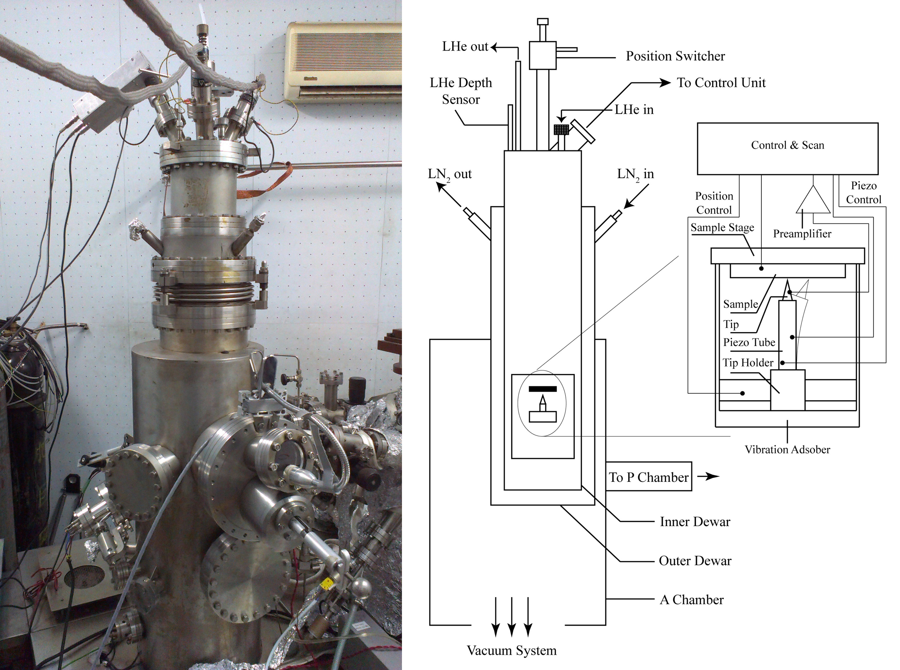
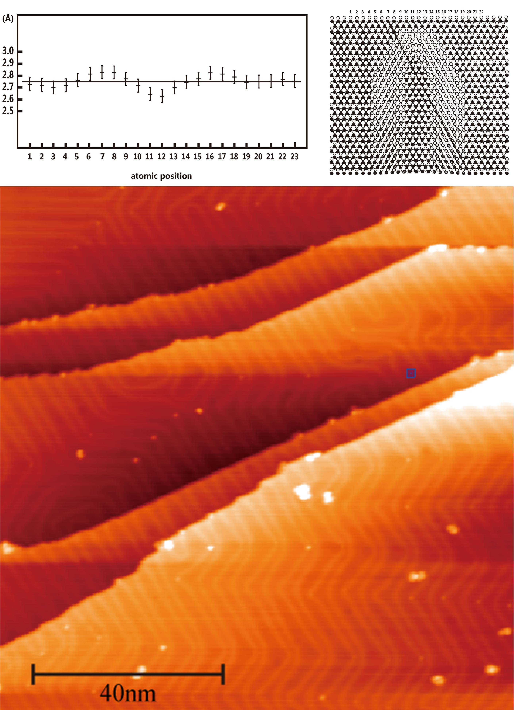
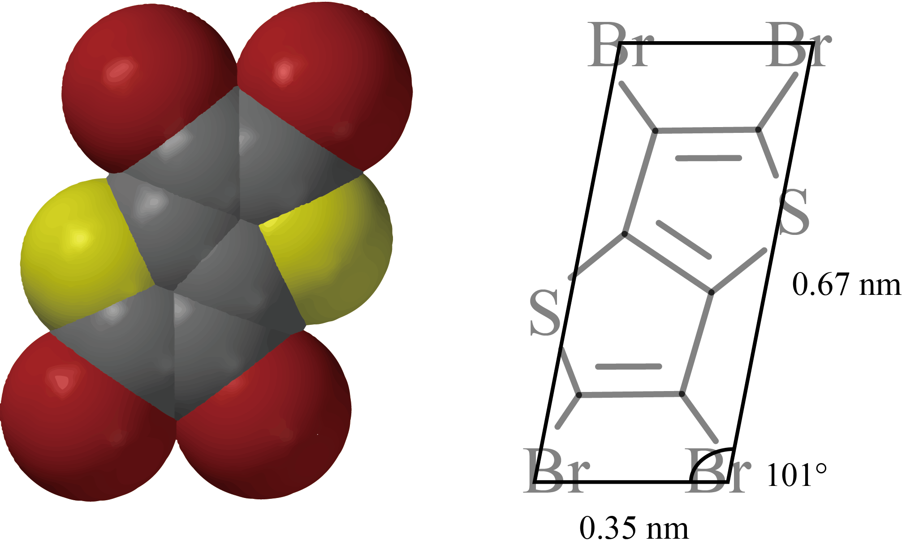
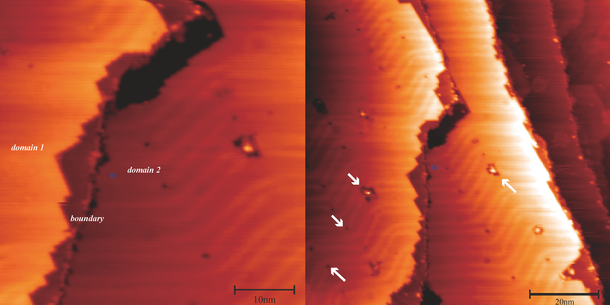
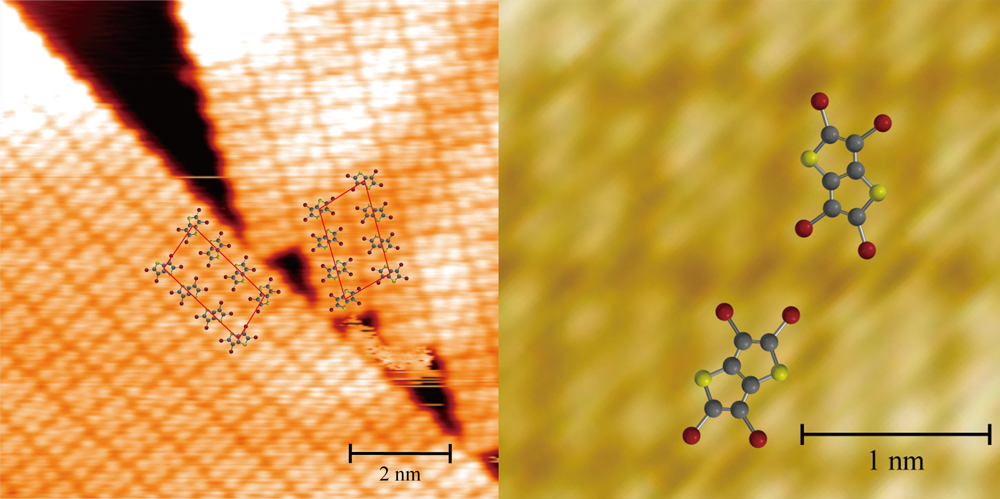

STM Investigation of Self-Assembly of Bromide Aromatic Compounds on Au(111) [PDF(Chinese)]
This is my undergraduate thesis project finished in 2014, under the supervision of Prof. Aidi Zhao.
Scanning tunneling microscope (STM) is a type of imaging instrument that makes use of quantum tunneling phenomenon to provide surface structure information at atomic level. In this project I use the Ultra High Vacuum (UHV) Low Temperature (LT) STM to investigate the structure and the corresponding inter-atomic interaction of single layered 2,3,5,6-Tetrabromo-thieno[3,2-b]thiophene (C6Br4S2, TBTT) on (111) crystal face of single-crystal gold.

Photo and structure of analysis chamber of the UHV LT-STM
First, the surface of single-crystal gold is treated by a beam of argon atoms accelerated by high voltage to clean the adhering molecules. Then the crystal is heated and annealed in high vaccum. After the annealing, some of the Au atoms on (111) crystal face would upheave from the surface to form a double ribbon like structure called herringbone. Those herringbones indicate that the surface is clean and regular enough for later experiments.

Structure and STM image of herringbones on Au(111)
TBTT powder is heated in a crucible in the preparation chamber of the STM, where the preprocessed gold crystal also locates. Some of its molecules would vaporize and then deposit on the Au(111) surface.

Molecular structure and shape of TBTT
The deposition is investigated by STM. TBTT molecules form continuous domains on gold surface. The molecular domain also presents herringbone structures due to the uplifting of Au atoms beneath it. Some defects could be spotted inside of those domains. Huge defects are caused by impurity molecules adhering on the surface, while small defects are positions that TBTT molecules are absent. Most of these defects occur at the "corners" of herringbones, because of the most irregular structures at such positions (see figures above).

TBTT domains and defects on Au(111)
Images with higher resolution reveal the padding patterns of TBTT molecules on Au(111). TBTT domains are composed with parallel molecule bands. Inside of each band, TBTT molecules have the same directions, while the directions in neighboring bands are opposite. Since molecules of these two directions could not convert to one another without flipping, TBTT molecules present 2D chirality. This chirality indicates potential application in some fields including electronics, optics and catalysis.

2D lattice of TBTT on Au(111)